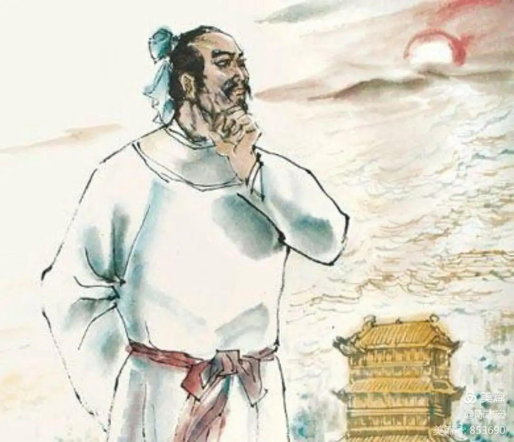

白日依山尽，黄河入海流。
欲穷千里目，更上一层楼。
赏析：这首诗写诗人在登高望远中表现出来的不凡的胸襟抱负，反映了盛唐时期人们积极向上的进取精神。其中，前两句写所见。“白日依山尽”写远景，写山，写的是登楼望见的景色，“黄河入海流”写近景，写水写得景象壮观，气势磅礴。这里，诗人运用极其朴素、极其浅显的语言，既高度形象又高度概括地把进入广大视野的万里河山，收入短短十个字中；而后人在千载之下读到这十个字时，也如临其地，如见其景，感到胸襟为之一开。首句写遥望一轮落日向着楼前一望无际、连绵起伏的群山西沉，在视野的尽头冉冉而没。这是天空景、远方景、西望景。
黄河远上白云间，一片孤城万仞山。
羌笛何须怨杨柳，春风不度玉门关。
赏析：王之涣这首写戍边士兵的怀乡情。写得苍凉慷慨，悲而不失其壮，虽极力渲染戍卒不得还乡的怨情，但丝毫没有半点颓丧消沉的情调，充分表现出盛唐诗人的豁达广阔胸怀。
杨柳东风树，青青夹御河。
近来攀折苦，应为别离多。
赏析：前两句写景，不仅点明了送别的时间和地点，还渲染出浓厚的离别情绪。“东门”点名了送别的地点在长安青门，“青青”表明杨柳的颜色已经很绿，表明时间是在深春。“杨柳”是送别的代名词，于是一见杨柳，就让人想到离别。绿色的杨柳树夹杂在御河两岸，看似恬静的环境反衬出诗人与友人离别的不舍。且首句是远望所见，第二句是近观所见。在远与近的距离感中，诗人送友的踽踽长街的身影得以体现，衬托出舍不得惜别却又不得不分别的心情。
©淘气汉子Urchins